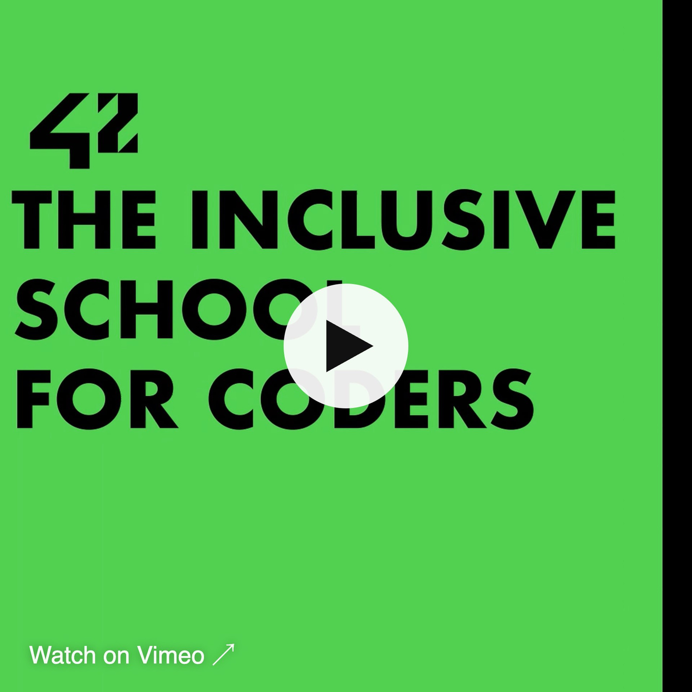
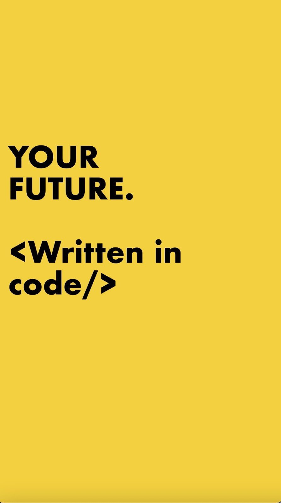
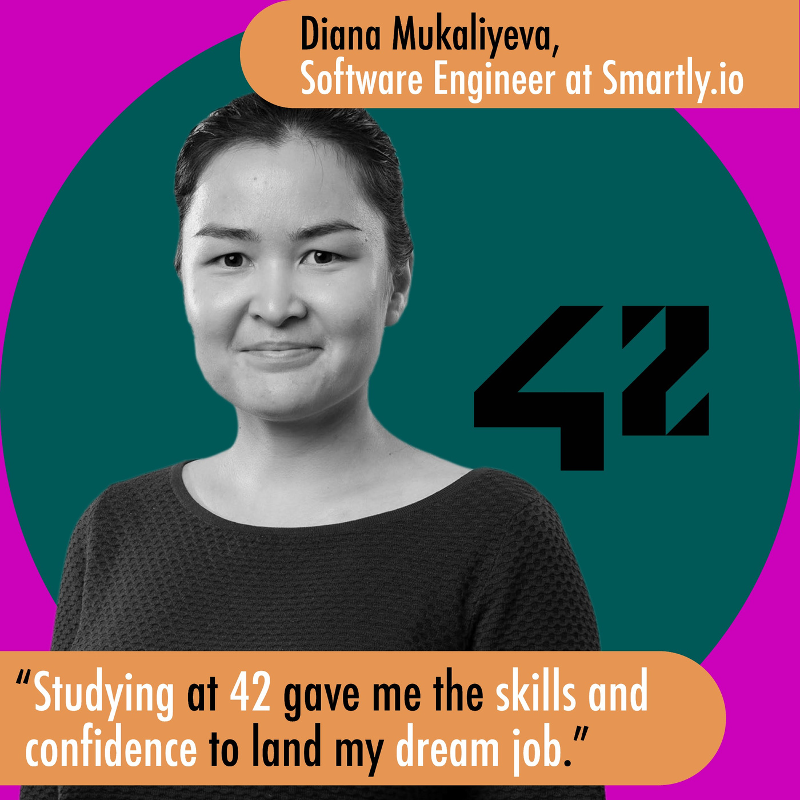
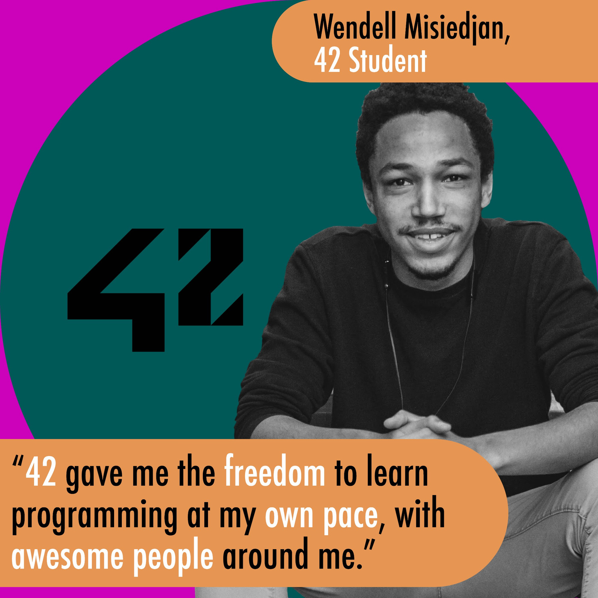
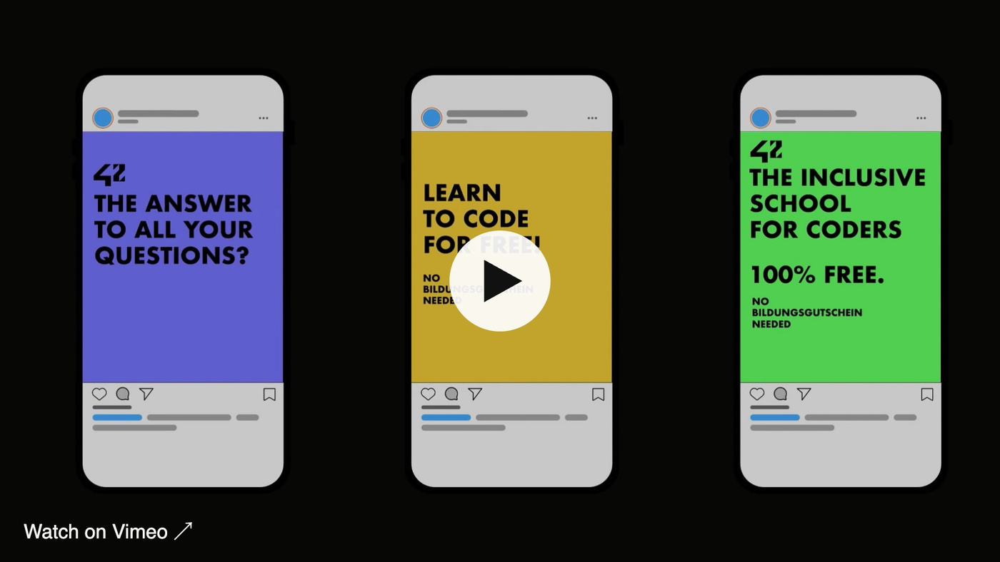
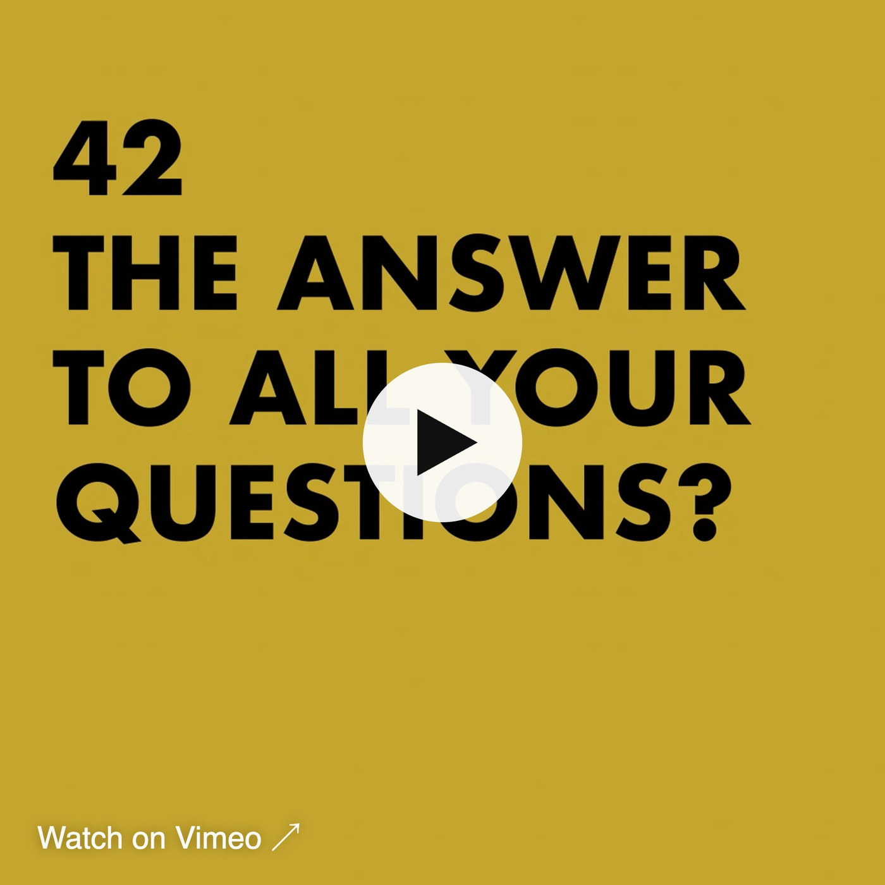

back

42 Berlin & 42 Wolfsburg: Student Recruitment Campaign, Testimonials & Paid Social for a Tuition-Free Coding School
Client: 42 Berlin / 42 Wolfsburg · Campaign Concept · Content Production · Motion Design · Paid Social42 is a global network of tuition-free coding schools – no teachers, no classes, no entry requirements, just peer-to-peer learning and real projects. For 42 Berlin and 42 Wolfsburg I worked on campaigns to attract new students: people who might never have considered a career in tech, from career changers to school leavers.
Campaign Idea: Your Future. Written in Code.
The campaign line put the promise of 42 into one sentence: your future is something you can write yourself. Bold typography and a clear call to action made the message work across posters, social media and web.
Student Testimonials as Social Proof
Nothing convinces future students like the people who already took the step. We produced a testimonial series with 42 students and alumni – like Diana Mukaliyeva, now a software engineer at Smartly.io, and Wendell Misiedjan – who explain in their own words what learning at their own pace changed for them.

Paid Social & Motion Content
For the rollout I developed animated content and paid social campaigns tailored to the target groups of the campuses – with hooks like “The answer to all your questions?”, “Learn to code for free!” and “The inclusive school for coders. 100% free.” – built to stop the scroll and drive applications.

Campaign animation for 42 Wolfsburg
My Responsibilities
— Campaign concept and messaging for student recruitment— Testimonial content production with students and alumni
— Motion design and social content for 42 Berlin and 42 Wolfsburg
— Paid social campaign planning and rollout
Next: Art & Curation – COUNCIL+ →
Today I bring this experience to content production and creator marketing at Table Studio, my community & experience studio in Berlin.